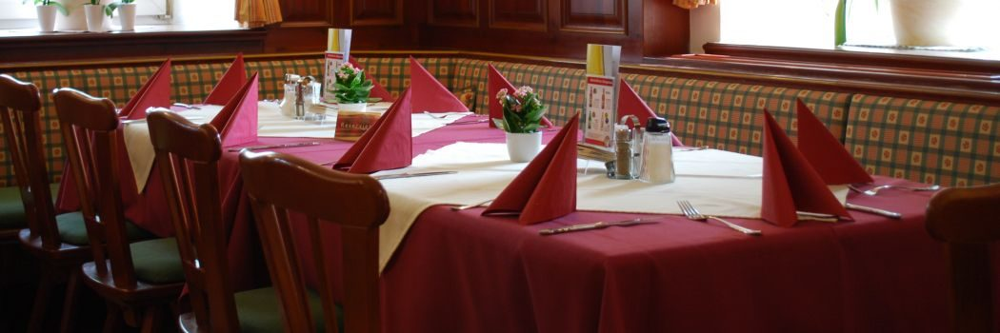
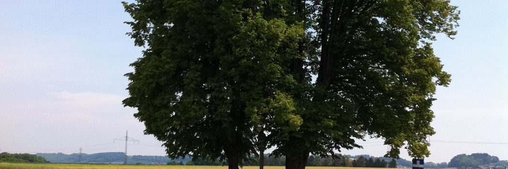
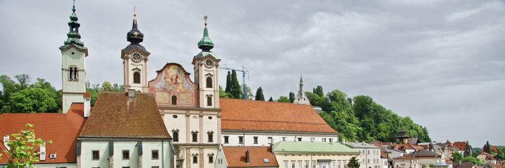

Wirtshaus
Z’sammsitz’n und Wohlfühlen: Unsere 4 gemütlichen Stuben und die Gickerl-Bar laden zum Bleiben ein. Regionale Schmankerl und edle Tropfen genießen Sie im Gewölberaum – oder an der frischen Luft in einem unserer Gastgärten.
Einkehrgasthof seit 300 Jahren
Familiengeführter Landgasthof mit Hotel in Steyr-Dietachdorf: vier Stuben, knapp 100 Zimmer, ein Festsaal für 250 Gäste und eine Küche, die von der Hausmannskost bis zur österreichischen Spezialität nichts offen lässt.

Willkommen im Herzen Steyrs
Unser Gasthof liegt mitten in Dietachdorf, mit guter Anbindung Richtung Steyr, Enns, Westautobahn und Linz sowie zu den umliegenden Gewerbebetrieben.
Neben den umfangreichen hauseigenen Angeboten bietet die nähere Umgebung zahlreiche Wald-Wanderwege, Radwege, Museen und vieles mehr. Nur zehn Autominuten entfernt liegt die Steyrer Altstadt, die sich mit ihrem Flair und dem kulturellen Angebot nicht vor größeren und bekannteren Städten verstecken muss.
Mehr als nur Wirtshaus
Z’sammsitz’n und Wohlfühlen: Unsere 4 gemütlichen Stuben und die Gickerl-Bar laden zum Bleiben ein. Regionale Schmankerl und edle Tropfen genießen Sie im Gewölberaum – oder an der frischen Luft in einem unserer Gastgärten.
Knapp 100 Zimmer in ruhiger Stadtrandlage mit bester Anbindung: Business, Standard und Economy – inklusive reichhaltigem Frühstücksbuffet, gratis W-LAN und Parkplatz.
Hochzeiten bis 250 Personen, drei Seminarräume mit kompletter Technik und ein Haus, das Busgruppen in kurzer Zeit versorgt – alles aus einer Hand, ohne externen Caterer.

Kultiwirt
Wir bekennen uns zur heimischen Wirtshauskultur und sind ganzjährig mittags und abends geöffnet.
Unsere Werte: Genussvoll – Regional – Ehrlich – Leidenschaftlich – Herzlich.
Montag bis Donnerstag, 11:30 – 13:30 Uhr · auch als Take-away, solange der Vorrat reicht.
Steyr & die Nationalpark Region
Ausgedehnte Wälder, glasklare Bäche, wilde Schluchten, aussichtsreiche Berggipfel und malerische Almen prägen die Landschaft des Nationalpark Kalkalpen.
Viele anderswo schon selten gewordene Tier- und Pflanzenarten finden hier Lebensraum – und auch wir Menschen sind gern gesehene Gäste. Tauchen Sie ein in die Waldwildnis und genießen Sie die Stille der Bergwelt.
Für die Erkundung der Umgebung gibt es die SteyrCard mit freien Eintritten und zahlreichen Premium-Ermäßigungen – exklusiv für Sie an unserer Hotelrezeption zum Preis von € 19,90 bei einem Gesamtwert von rund € 43,00. Die Karte ist ab dem Ausstellungsdatum ein Jahr gültig.
Weitere Informationen: www.steyr.info

Einblicke
Das Wirt-im-Feld-Team – eine kleine Familie. Zum Vergrößern anklicken.
Die Sieger unseres jährlichen Wirt-im-Feld-Quiz: Jedes Jahr gibt es bei der Mitarbeiterfeier das allseits beliebte WiF-Quiz. Der Sieg ging an das Team Schaf mit Babsi, Manda, Tamea und Silvia – Gratulation!
Die Original Wiener Sängerknaben zu Gast: Vielen Dank nochmals für den netten Aufenthalt. Immer wieder besuchen uns die verschiedensten Gruppen, Firmen und Vereine.
75 Bäume für Dietach (21. Jänner 2022): Im Kulturausschuss Dietach wurde beschlossen, anlässlich des Jubiläums 75 Jahre Gemeinde Dietach 75 Bäume zu pflanzen. Die ersten 35 Bäume wurden noch vor Weihnachten am Ortsplatz, im Kindergarten, am Parkplatz vor der Sportanlage, vor der neuen Aufbahrungshalle, im Forellenweg und in Stadlkirchen gesetzt. Die restlichen Bäume folgen im Frühjahr.
Zimmer, Tisch, Seminarraum oder Festsaal – sagen Sie uns, worum es geht, wir melden uns mit einem konkreten Vorschlag.